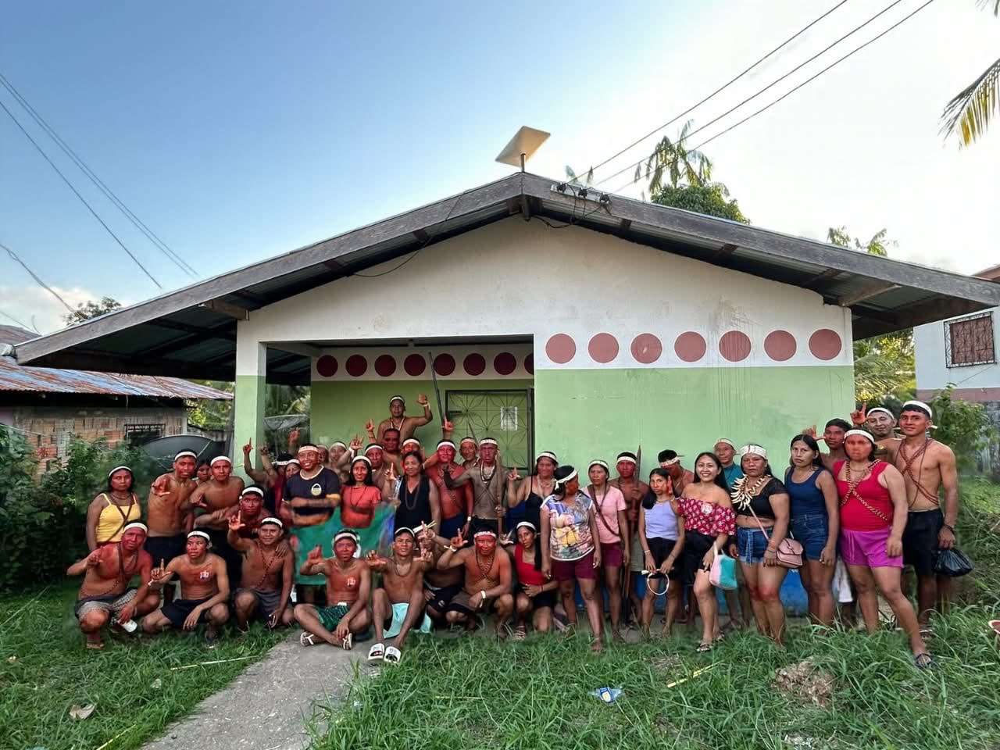

DIREITO AO VOTO
TRE-AM nega transporte gratuitopara indígenas do Vale do Javarivotarem no segundo turno
Pedido da UNIVAJA abrangia 43 aldeias; decisão cita prazos vencidos, falta de orçamento e dificuldades logísticas para o transporte fluvial
Foto: Reprodução / Mídia NINJA